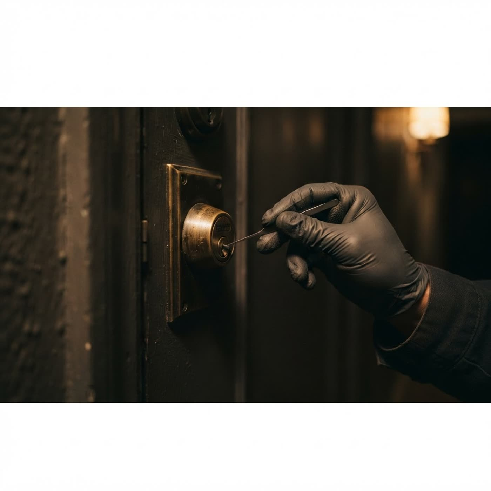

Захлопнулась дверь? Откроем без следов
Вскрытие замков квартир, домов, авто и сейфов в Гродно и окрестностях. Работаем круглосуточно: мастер с современным оборудованием приедет и откроет замок без повреждений — или отремонтирует, если замок заклинило.
Выберите, что случилось
Четыре самых частых повода для звонка. Нажмите на карточку — покажу, как решается именно этот случай.
Захлопнулась дверь
Самый частый случай: дверь закрылась на защёлку, ключи внутри. Открываем отмычкой или специальной пластиной — защёлка освобождается, замок остаётся целым и рабочим. Если дверь на замке — работаем с механизмом, тоже без повреждений.
Замки всех типов — от квартирных до сейфовых
Мастер приезжает с набором инструментов под каждый тип механизма, поэтому вскрытие проходит аккуратно.
Три шага — и вы дома
Круглосуточно, без «подождите до утра». Стоимость называем по телефону до выезда — без скрытых платежей.
Звонок мастеру
Опишите ситуацию: что за дверь, какой замок, есть ли ключи. Сразу назовём стоимость и время выезда.
Мастер выезжает
По Гродно и окрестностям — обычно 15–30 минут. Приезжает с оборудованием под ваш тип замка.
Вскрытие и совет
Открываем без повреждений, проверяем работу механизма и говорим, нужен ли ремонт или замена личинки.

Не «выбить и поставить новый», а открыть аккуратно
Что спрашивают перед вызовом
Не нашли ответ — позвоните, сориентируем сразу.